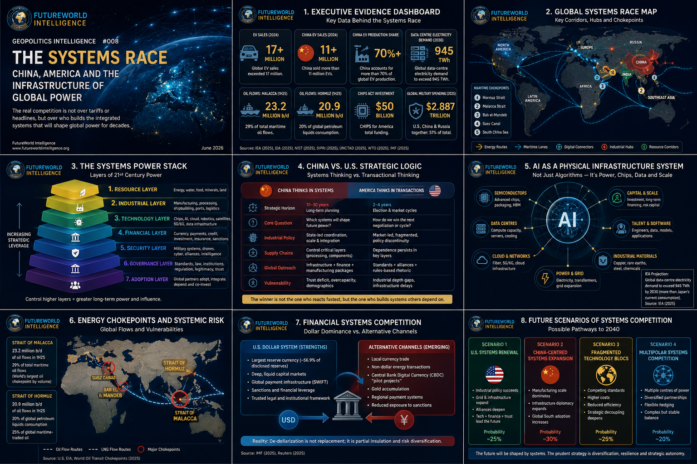
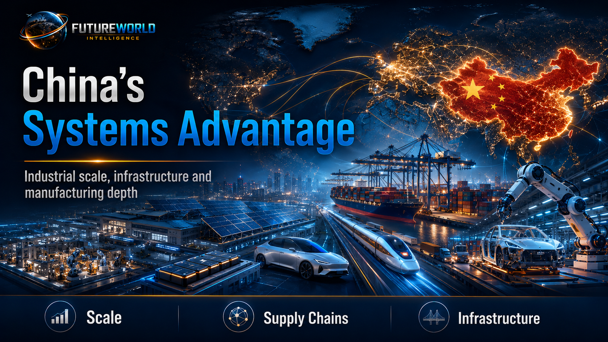
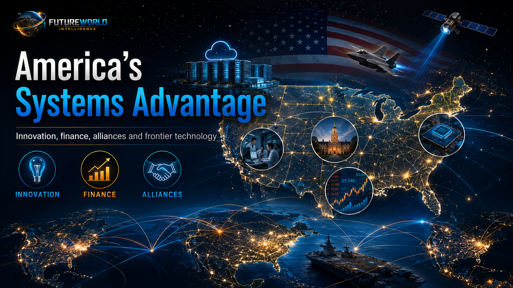
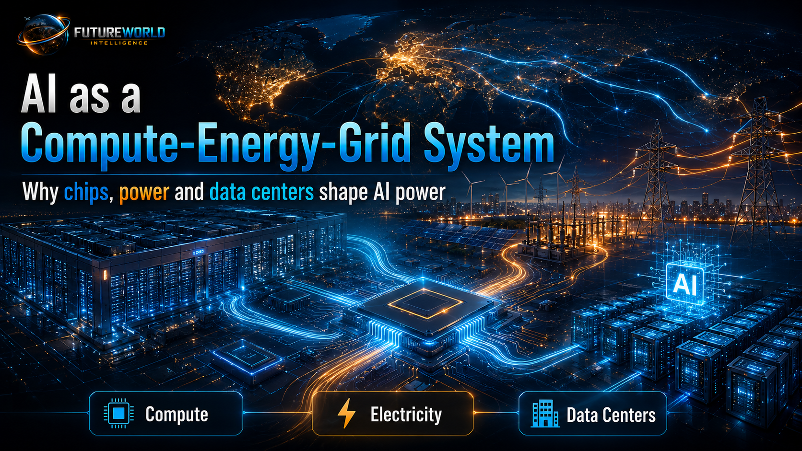
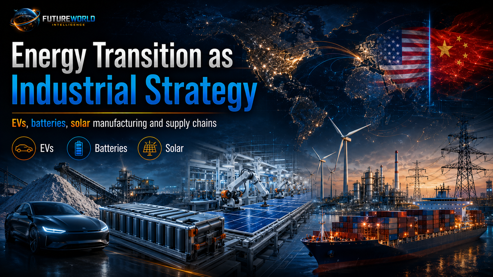
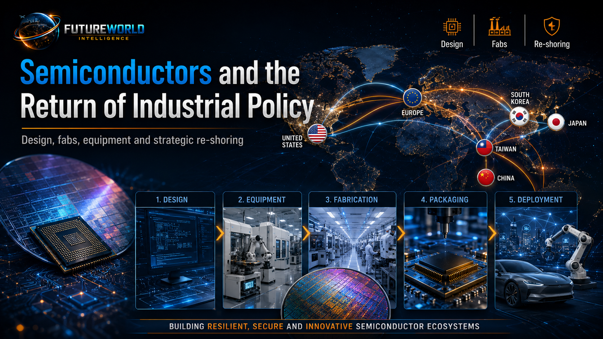
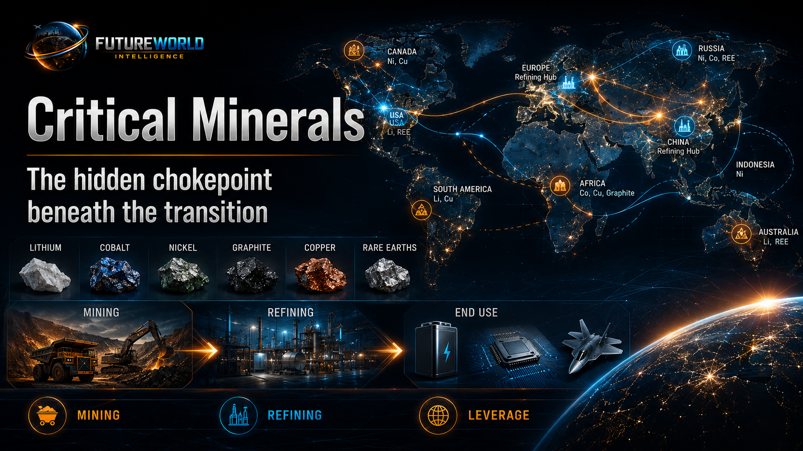
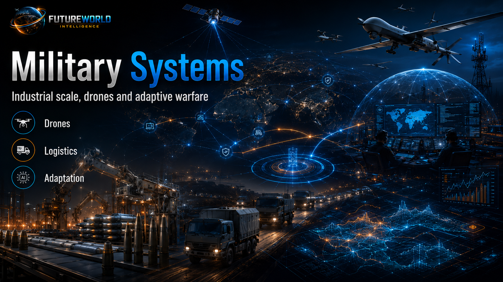

Executive Brief
The defining contest between China and the United States is no longer adequately explained by tariffs, trade balances, summit diplomacy, export controls, sanctions, military signalling or campaign-season rhetoric. Those are instruments. The deeper contest is structural. It is a systems race: a long-cycle struggle over who can build, finance, manufacture, power, secure, govern and export the infrastructures on which other countries will depend.
This report argues that the next phase of global power will be decided less by isolated technological breakthroughs and more by integrated systems capability. The decisive question is not simply who invents the most advanced technology. It is who can convert invention into industrial depth, energy availability, mineral security, logistics resilience, financial reach, military adaptation, alliance credibility and global adoption.
China’s strategic advantage lies in its accumulation of techno-industrial scale across the physical layers of future power: electric vehicles, batteries, solar manufacturing, critical minerals processing, ports, shipbuilding, logistics, industrial finance and manufacturing ecosystems. The United States retains unmatched advantages in frontier innovation, advanced chip design, cloud platforms, reserve-currency finance, capital markets, elite universities, global alliances and military reach. But the American advantage becomes vulnerable when innovation is not matched by industrial execution, grid readiness, infrastructure speed, supply-chain control and policy continuity.
The empirical record now supports this systems-level reading. Global electric car sales exceeded 17 million in 2024, with China selling more than 11 million and accounting for more than 70 percent of global EV production [S1]. The International Energy Agency projects global data-centre electricity demand to more than double by 2030 to around 945 TWh, slightly above Japan’s current electricity consumption [S2]. The U.S. Energy Information Administration estimates that the Strait of Malacca carried 23.2 million barrels per day of oil flows in the first half of 2025, equal to 29 percent of total maritime oil flows, while Hormuz carried 20.9 million barrels per day [S3]. CHIPS for America includes $50 billion under the U.S. Department of Commerce, including $39 billion for manufacturing incentives and $11 billion for research and development [S4]. SIPRI reports that world military expenditure reached $2.887 trillion in 2025, with the United States, China and Russia together accounting for 51 percent of the global total [S5]. The WTO estimates that artificial intelligence could increase global trade by 34–37 percent and global GDP by 12–13 percent by 2040 under enabling conditions [S6].
These figures are not separate facts. They are evidence of one strategic pattern: power is migrating toward states and coalitions that control the infrastructure stack beneath the global economy.
For FutureWorld Intelligence, the central conclusion is clear: the U.S.-China competition is not merely a bilateral rivalry. It is a contest over the operating systems of the twenty-first century.
Evidence Dashboard: Why This Is a Systems Race

| Strategic System | Empirical Anchor | Geopolitical Meaning |
|---|---|---|
| Electric vehicles and batteries | Global EV sales exceeded 17 million in 2024; China sold more than 11 million and accounted for more than 70 percent of global EV production. [S1] | China has converted industrial policy into manufacturing scale, export capacity and price-setting pressure. |
| AI infrastructure | Global data-centre electricity demand is projected to more than double by 2030 to around 945 TWh. [S2] | AI is not only a model race; it is a compute-energy-grid race. |
| Maritime chokepoints | Malacca carried 23.2 million b/d of oil flows in 1H25; Hormuz carried 20.9 million b/d. [S3] | The digital economy still depends on tankers, ports, maritime corridors and physical chokepoints. |
| Semiconductors | CHIPS for America includes $50 billion, with $39 billion for incentives and $11 billion for R&D. [S4] | The U.S. recognizes that semiconductor dependence is a national security vulnerability. |
| Military expenditure | World military spending reached $2.887 trillion in 2025; the U.S., China and Russia accounted for 51 percent. [S5] | Security competition is becoming industrial, technological and fiscal at the same time. |
| Critical minerals | Critical mineral markets remain highly concentrated, especially in refining and processing. [S7] | Mineral processing is a hidden chokepoint beneath AI, EVs, batteries, grids and defense. |
| Maritime trade volatility | UNCTAD’s 2025 maritime review warns of uncertainty, volatility and rising shipping costs. [S8] | Logistics are no longer a neutral commercial background; they are a strategic-risk system. |
| AI and global trade | WTO analysis suggests AI could raise global trade by 34–37 percent and GDP by 12–13 percent by 2040. [S6] | AI adoption will reshape trade power, but mainly for countries with infrastructure, skills and digital access. |
| Dollar system | The dollar remains dominant, but diversification and alternative settlement efforts continue. [S9] | De-dollarization is not replacement; it is strategic insulation. |
FutureWorld Analytical Method: G-D-T-L-S
FutureWorld Intelligence applies the G-D-T-L-S formula to avoid shallow headline analysis.
G — Geography: Where are the systems located? This includes chokepoints, ports, mineral reserves, industrial clusters, chip fabs, data-centre corridors, energy basins, undersea cables, alliance routes and maritime passages.
D — Data: What evidence shows relative advantage or vulnerability? This includes EV production, battery capacity, data-centre electricity demand, oil flows, military expenditure, semiconductor investment, reserve-currency shares, critical mineral concentration and infrastructure finance.
T — Theory: Which strategic logic explains the pattern? This report uses geoeconomics, realism, sea-power theory, industrial policy, dependency theory, systems theory and technology-power analysis.
L — Law: Which rules, restrictions and regulatory instruments shape the contest? This includes export controls, sanctions, WTO rules, investment screening, maritime law, technology standards, data governance, industrial subsidies and financial regulations.
S — Scenario: What pathways could emerge? This report assesses four scenarios: U.S. systems renewal, China-centred systems expansion, fragmented technology blocs and multipolar systems competition.
Through this formula, the U.S.-China rivalry becomes clearer. Geography shows where systems are anchored. Data shows where power is shifting. Theory explains why system control creates leverage. Law shows how states regulate and weaponize access. Scenarios show how today’s competition may reshape global order.
1. The Policy Problem: Tariffs Cannot Explain the Competition
The language of U.S.-China competition is often trapped in short-cycle vocabulary: tariffs, deficits, sanctions, bans, export controls, investment screening, decoupling, de-risking and summit diplomacy. These instruments matter, but they do not fully describe the strategic terrain.
A tariff changes prices. A system changes dependence.
A sanction restricts access. A system determines whether access is necessary in the first place.
A summit may stabilize optics. A system shapes options for decades.
The policy error is to confuse the tactical instrument with the structural contest. The United States may win a tariff round and still lose ground if China dominates the manufacturing base of future energy systems. China may expand exports and still face resistance if partners fear debt exposure, surveillance risk, political coercion or strategic dependence. The systems race is therefore not reducible to who gains leverage in a single negotiation. It is about who builds the infrastructural grammar through which other countries organize their economies.
Systems power is a form of geoeconomic statecraft. It fuses manufacturing depth, technological capability, standards influence, development finance, logistics, energy security, military adaptation and political credibility. It is not one sector. It is a cluster of mutually reinforcing capabilities.
The policy implication is direct: serious U.S.-China analysis must move from event analysis to systems analysis.
2. China’s Systems Advantage: Scale, Coordination and Physical Infrastructure
China’s rise is often discussed through GDP, exports or military spending. The deeper strategic story is the accumulation of systems capacity.

China has built strength across sectors that function as the physical foundation of future power: EVs, batteries, solar modules, critical minerals processing, industrial robotics, ports, shipbuilding, rail corridors, telecommunications, digital platforms and advanced manufacturing clusters. This is not accidental. It reflects a long-term pattern of industrial statecraft: identify future sectors, mobilize capital, build domestic champions, absorb technology, scale production, lower costs, expand exports and use infrastructure to widen strategic reach.
The EV case is revealing. Global electric car sales exceeded 17 million in 2024, while China sold more than 11 million. China also accounted for more than 70 percent of global electric car production and exported nearly 1.25 million electric cars in 2024 [S1]. This is not merely an automotive story. It is a systems story linking batteries, lithium supply chains, software, charging infrastructure, electricity demand, export finance, shipping, industrial employment and geopolitical influence.
China’s strength lies not only in final goods. It lies in the middle layers: refining, components, assembly, logistics, supplier ecosystems and cost reduction. That is where many states remain vulnerable. A country may own mineral reserves but lack processing capacity. It may design technology but lack manufacturing scale. It may consume clean-energy equipment but depend on imported modules, inverters, batteries and power electronics.
China’s advantage is therefore not pure innovation supremacy. It is systems accumulation. It has built depth across the physical infrastructure of modern power.
This does not mean China dominates every frontier. It still faces constraints in advanced semiconductors, high-end aviation, financial trust, demographic structure, domestic consumption, governance transparency and political legitimacy in several regions. Its industrial system also carries overcapacity risks and external backlash. But its systems capacity is formidable because it has already occupied many of the material layers beneath the future economy.
3. America’s Systems Advantage: Innovation, Finance, Alliances and Frontier Technology
The United States remains the most powerful systems actor in several domains. It is the core of the dollar-based financial order, the leader in frontier AI research, advanced chip design, cloud computing, aerospace, biotechnology, venture capital, defense technology and alliance networks. Its universities, research laboratories, technology firms and capital markets provide an innovation depth that China has not fully replicated.

America’s problem is not absence of capacity. It is conversion loss.
Conversion loss occurs when a country possesses scientific, financial and technological superiority but fails to translate it into deployable industrial power at speed. The United States can invent, finance and regulate frontier sectors, but it often struggles with permitting, transmission lines, grid expansion, skilled manufacturing labour, supply-chain coordination and long-term industrial policy continuity.
The CHIPS and Science Act is important because it signals a strategic correction. CHIPS for America includes $50 billion under the U.S. Department of Commerce, including $39 billion for manufacturing incentives and $11 billion for research and development [S4]. This is not ordinary industrial policy. It is an acknowledgement that semiconductors are economic infrastructure, national security infrastructure and technological sovereignty infrastructure at the same time.
The American advantage remains deep, but it is increasingly conditional. If the United States combines innovation with industrial depth, it can retain strategic leadership. If it treats industrial capacity as a secondary market issue, it risks depending on supply chains controlled, disrupted or politically pressured by others.
The policy problem is not whether America can innovate. It can. The problem is whether it can industrialize its innovation fast enough.
4. The Systems Gap: Where Innovation Becomes Dependent
The systems gap is the distance between frontier invention and deployable power.
A country can lead in AI models but remain dependent on foreign semiconductor fabrication, rare earth magnets, transformers, grid equipment, cooling systems, industrial components or manufacturing ecosystems. It can lead in chip design but depend on offshore fabs. It can lead in clean technology research but import key battery materials. It can lead in cloud computing but face electricity constraints. It can lead in finance but lose credibility if partners fear sanctions overreach or political volatility.
This is where China’s systems strategy challenges the United States. China does not need to surpass America in every frontier domain. It can gain leverage by occupying the physical, intermediate and adoption layers beneath those frontiers.
The systems gap can be expressed in four questions:
- Who designs the technology?
- Who manufactures it at scale?
- Who controls the inputs, logistics and standards?
- Who can make other countries adopt it?
The United States is strongest in the first layer. China is increasingly strong in the second and third. The fourth layer remains contested, especially across the Global South.
This is why systems power is not identical to innovation power. Innovation creates possibility. Systems convert possibility into dependence.
5. AI as a Compute-Energy-Grid System
Artificial intelligence is often described as a software revolution. That is incomplete. At scale, AI is a physical infrastructure system.

AI requires advanced semiconductors, data centres, electricity, cooling, fiber networks, cloud platforms, transformers, copper, land, water, capital and skilled engineers. The IEA projects that electricity demand from data centres worldwide will more than double by 2030 to around 945 TWh, slightly more than Japan’s current electricity consumption. It also projects that AI-optimized data-centre electricity demand will more than quadruple by 2030 [S2].
This figure changes the strategic meaning of AI. A country without reliable electricity cannot become an AI power. A country without data-centre investment cannot host large-scale compute. A country without chip access cannot train or deploy frontier models. A country without grid expansion cannot absorb AI load. A country without cooling systems, water planning and land-use policy will face infrastructure bottlenecks.
The United States leads in frontier AI models, hyperscale cloud platforms and advanced chip design. But AI infrastructure is beginning to collide with energy geography. The IEA notes that U.S. data-centre power consumption is on course to account for almost half of electricity-demand growth between now and 2030 [S2]. That means AI policy is now electricity policy, grid policy, land policy, industrial policy and national security policy.
China’s AI challenge is different. It faces chip restrictions and access constraints, but it has manufacturing depth, industrial AI applications and state coordination around infrastructure deployment. The competition is therefore not simply “Who has the best model?” It is “Who can build the full AI stack?”
For the Global South, this has major consequences. Most developing countries will not build frontier foundation models. But they will choose cloud partners, digital infrastructure, AI governance frameworks, data-centre locations, smart-city systems, surveillance technologies, education platforms and industrial automation tools. AI influence will therefore be exported through infrastructure packages, not only software.
6. Energy Transition as Industrial Strategy
The energy transition is not only a climate agenda. It is a geopolitical-industrial reordering.

Solar panels, batteries, EVs, electrolyzers, grids, inverters and critical minerals are becoming instruments of industrial power. The country that dominates clean-energy manufacturing gains export markets, technological leverage, standards influence, employment, supply-chain control and strategic relevance in energy-insecure regions.
China has treated the energy transition as industrial statecraft. Its EV, battery and solar capacity is not a collection of isolated sectors. It is a national manufacturing ecosystem. The IEA’s EV data show how far this ecosystem has moved: more than 11 million electric cars sold in China in 2024 and more than 70 percent of global EV production located there [S1].
This matters because energy turbulence accelerates demand for alternatives. When oil routes are disrupted, when gas prices spike, when shipping insurance rises, and when import-dependent economies face currency pressure, the incentive to diversify energy systems increases. Countries then turn to solar, batteries, electrified transport and grid resilience. If those systems are manufactured mainly by one country, energy transition becomes a channel of influence.
The policy implication is not that the United States, Europe or developing countries should reject Chinese technology automatically. The problem is unmanaged dependency. Energy resilience should not become single-source exposure. A climate transition built on concentrated supply chains can reduce carbon vulnerability while increasing geopolitical vulnerability.
7. Maritime Chokepoints: The Physical Geography Beneath Digital Power
The systems race is often discussed in digital language, but global power still moves through physical chokepoints.
EIA estimates that the Strait of Malacca carried 23.2 million barrels per day of oil flows in the first half of 2025, equivalent to 29 percent of total maritime oil flows and making it the world’s largest oil chokepoint by volume [S3]. Hormuz carried 20.9 million barrels per day in the same period, equivalent to about 20 percent of global petroleum liquids consumption and one-quarter of global maritime-traded oil [S3].
These are not just energy statistics. They are indicators of systemic exposure.
A crisis in Hormuz affects LNG, crude oil, petrochemicals, shipping insurance, inflation, fiscal balances and industrial inputs. A crisis in Malacca affects East Asian energy security, Chinese imports, Japanese and Korean industrial stability, maritime insurance and global manufacturing. Disruptions in Bab el-Mandeb and the Suez system show how regional instability can reroute trade around the Cape of Good Hope, increasing time, cost and uncertainty.
UNCTAD’s 2025 Review of Maritime Transport frames the shipping environment in terms of turbulent waters, uncertainty, volatility and rising costs [S8]. This supports a central FutureWorld conclusion: logistics are no longer the invisible background of globalization. They are a primary arena of strategic risk.
China has invested heavily in ports, shipbuilding, logistics and trade corridors because it understands maritime dependence. The United States retains unrivalled naval reach and alliance access, but commercial logistics capacity, port modernization and shipping-industrial depth also matter. Sea power in the twenty-first century is not only fleets. It is ports, data, insurance, freight, cables, shipyards, energy flows and chokepoint resilience.
8. Semiconductors and the Return of Industrial Policy
Semiconductors are the command substrate of modern systems. They power AI, weapons, satellites, vehicles, data centres, industrial automation, smartphones, grids and medical technologies.

But semiconductors are not a single sector. They are a highly specialized transnational chain: design, electronic design automation, equipment, lithography, materials, fabrication, advanced packaging, testing and final assembly. Each layer has its own chokepoints.
The United States is strong in design, software, equipment ecosystems and frontier firms. Taiwan is central to advanced fabrication. South Korea is strong in memory. Japan and the Netherlands hold critical positions in materials and lithography-related equipment. China has large-scale electronics manufacturing, domestic demand and policy ambition, but faces constraints in the most advanced nodes.
The CHIPS and Science Act is therefore more than a subsidy package. It is strategic re-shoring and allied re-fortification. NIST states that semiconductors are integral to economic and national security, powering consumer electronics, automobiles, data centres, critical infrastructure and virtually all military systems [S4].
This is the return of industrial policy in the language of national security. The market alone did not preserve sufficient domestic semiconductor capacity. Strategic rivalry forced the state back into the industrial base.
The policy lesson is broader than chips: when a technology becomes foundational to national power, supply chains become security architecture.
9. Critical Minerals: The Hidden Chokepoint Beneath the Transition
Critical minerals are the subterranean layer of the systems race.

Lithium, cobalt, nickel, graphite, copper, rare earth elements and other strategic materials underpin batteries, EVs, wind turbines, solar systems, electricity grids, defense technologies, satellites, robotics and AI infrastructure. Mining matters, but processing matters even more. A country may possess mineral reserves yet remain dependent if refining, separation, processing and component manufacturing are controlled elsewhere.
IEA’s Global Critical Minerals Outlook 2025 highlights the strategic importance of monitoring mineral markets, investment trends, supply bottlenecks, geopolitics and diversification mechanisms [S7]. Reuters’ coverage of the IEA report notes that critical mineral markets have become increasingly concentrated, especially in refining and processing, and that the average share of the top three refined-material suppliers is projected to remain around 82 percent by 2035 [S7].
China’s strength in mineral processing gives it leverage below the visible surface of clean energy and digital technology. This leverage is not always exercised openly. Often it works through price, availability, processing capacity, export controls and supply-chain anxiety.
For the United States and its partners, diversification is not simple. New mines face permitting challenges, environmental concerns, local opposition, high capital costs and long timelines. Processing capacity requires technical expertise, energy, water, chemical systems and regulatory approval. Recycling helps, but it cannot yet replace primary supply at the scale required.
For developing countries, the opportunity is significant but risky. Mineral-rich countries can move beyond raw extraction only if they build processing, governance, environmental safeguards, value addition and bargaining capacity. Otherwise, they remain resource suppliers in a higher-tech dependency chain.
10. Military Systems: Industrial Scale, Drones and Adaptive Warfare
Military power is becoming increasingly systems-based. Platforms still matter, but the decisive question is how sensors, drones, satellites, electronic warfare, cyber tools, logistics, command networks, munitions production and industrial replenishment operate together.

SIPRI reports that global military expenditure reached $2.887 trillion in 2025, with the United States, China and Russia together accounting for $1.48 trillion, or 51 percent of the global total [S5]. The United States spent $954 billion, while China’s military spending was estimated at $336 billion [S5].
These numbers show two things. First, the security environment is becoming more expensive. Second, spending alone is not enough. The Ukraine war, Middle Eastern drone warfare and Red Sea maritime disruptions show that relatively low-cost systems can impose high costs on advanced militaries and commercial networks.
The military systems race has three dimensions:
- Mass: the ability to produce drones, missiles, munitions and components at scale.
- Integration: the ability to connect sensors, shooters, software and command systems.
- Adaptation: the ability to learn quickly from battlefield feedback.
Legacy superiority can erode if procurement cycles are slow, production lines are fragile, or expensive platforms are exposed to cheap autonomous threats. Future deterrence will depend not only on elite weapons, but on industrial surge capacity, software iteration and resilient supply chains.
11. Financial Systems: Dollar Dominance and Strategic Insulation
The U.S. dollar remains the central currency of global finance. It anchors trade invoicing, reserves, banking, debt markets, liquidity and sanctions power. IMF data and recent IMF commentary continue to describe the global economy as firmly dollar-centred [S9].
This means claims of immediate de-dollarization are overstated. There is no full substitute for the dollar system at present. China’s currency lacks the openness, liquidity, institutional trust and convertibility required to replace the dollar globally. BRICS discussions of alternative settlement systems remain limited compared with the depth of dollar markets.
But the strategic trend should not be dismissed. Many countries are not trying to replace the dollar overnight. They are trying to reduce vulnerability to U.S. financial coercion. The correct term is not de-dollarization. It is partial financial insulation.
Partial insulation can include local-currency trade, gold accumulation, bilateral settlement channels, central bank digital currency experiments, non-dollar commodity transactions and regional payment systems. These mechanisms do not end dollar dominance, but they can reduce the totality of U.S. leverage in specific corridors.
For U.S. policymakers, the implication is clear: financial dominance depends on trust as much as power. Overuse of sanctions, debt-ceiling instability, political volatility or weaponized financial access can accelerate hedging behaviour, even if no rival currency is ready to replace the dollar.
12. The Global South: Main Arena of Systems Adoption
The systems race will not be decided only in Washington, Beijing, Brussels, Tokyo or Silicon Valley. It will be decided in the infrastructure choices of Africa, South Asia, Southeast Asia, the Middle East, Latin America and Central Asia.
Developing countries need power grids, ports, roads, railways, data centres, cloud services, affordable EVs, solar systems, AI tools, digital payments, industrial parks, climate adaptation, health systems, agriculture technology and education platforms. They will judge systems by cost, speed, reliability, financing, skills transfer, political conditions and local benefits.
China’s offer is often attractive because it is tangible: infrastructure, equipment, financing, contractors, speed and manufacturing packages. The United States and its allies often offer higher-trust systems, stronger legal safeguards, better universities, advanced technology and institutional credibility, but they can appear slower, more fragmented and less visible on the ground.
This is where FutureWorld’s analysis should be especially sharp. The Global South should not view the systems race as a binary loyalty test. The strategic objective should be sovereign diversification: adopt useful systems, avoid single-source dependency, strengthen domestic capacity, negotiate technology transfer, protect data, build local industry and maintain policy autonomy.
Pakistan, for example, should evaluate systems competition through ports, energy, AI infrastructure, agriculture technology, climate resilience, minerals, education, industrial zones, digital governance and regional logistics. Strategic geography alone is not enough. Gwadar, CPEC, Karachi, Port Qasim and digital corridors become valuable only when embedded in governance, security, skills, logistics and productive capacity.
13. FutureWorld Systems Power Index
FutureWorld Intelligence can assess systems power through ten indicators:
| Indicator | Meaning |
|---|---|
| Industrial depth | Can the country manufacture strategic goods at scale? |
| Energy resilience | Can it power AI, industry, households and defense without severe vulnerability? |
| Mineral security | Does it control mining, processing, refining or recycling layers? |
| Semiconductor position | Does it design, fabricate, package or control essential chip tools? |
| AI infrastructure | Does it possess compute, data centres, cloud, talent and electricity? |
| Logistics reach | Does it control ports, shipping, corridors, warehouses and trade routes? |
| Financial leverage | Does it shape reserves, payments, credit, sanctions or investment flows? |
| Military adaptation | Can it integrate drones, autonomy, cyber, munitions and command systems? |
| Alliance credibility | Do partners trust its commitments, standards and security guarantees? |
| Adoption power | Do other countries choose its systems because they work? |
This index avoids simplistic “who is winning” commentary. It shows that systems power is layered. China may lead in manufacturing scale but face trust deficits. The United States may lead in finance and innovation but face industrial bottlenecks. Europe may lead in regulation but struggle with scale. Gulf states may gain energy-finance-AI relevance. India may grow as a demographic, digital and industrial counterweight. Developing countries may gain bargaining power if they diversify intelligently.
14. Policy Implications
For the United States
The United States should treat industrial capacity as strategic infrastructure. Innovation policy must be tied to energy permitting, grid modernization, manufacturing workforce, critical minerals, allied supply chains and long-term public-private coordination. America does not need Chinese-style state capitalism, but it does need strategic continuity beyond electoral cycles.
For China
China must understand that systems power without trust generates resistance. Industrial scale can create influence, but overcapacity, coercive diplomacy, debt concerns, surveillance anxiety and political opacity can reduce adoption. If China wants global systems leadership, it must convert capacity into credibility.
For the Global South
Developing countries should avoid passive dependency. They should use U.S.-China competition to negotiate better infrastructure, local skills, technology transfer, diversified finance, environmental protections, data safeguards and domestic manufacturing. The objective should be capability-building, not camp-following.
For Pakistan
Pakistan should read the systems race through national development priorities: energy reliability, digital infrastructure, ports, climate resilience, industrial zones, minerals, AI education, agricultural modernization and regional connectivity. Strategic geography alone is not enough. Gwadar, CPEC, Karachi, Port Qasim and digital corridors become valuable only when embedded in governance, security, skills, logistics and productive capacity.
15. Scenario Pathways
Scenario 1: U.S. Systems Renewal
The United States links innovation with industrial execution. CHIPS implementation accelerates, grid expansion improves, AI infrastructure scales responsibly, allies coordinate supply chains, and developing-world infrastructure finance becomes more competitive. In this scenario, America remains the anchor of high-trust advanced systems.
Scenario 2: China-Centred Systems Expansion
China deepens its lead in EVs, batteries, solar, ports, critical minerals, industrial equipment, digital infrastructure and development finance. Many countries adopt Chinese systems because they are affordable, available and fast. China does not need to replace the United States everywhere; it only needs to become indispensable across enough critical layers.
Scenario 3: Fragmented Systems Blocs
Technology, finance, chips, AI, cloud, data, energy and security systems split into rival blocs. Costs rise, redundancy increases, and developing countries face pressure to align with competing standards. This scenario reduces efficiency but increases strategic insulation.
Scenario 4: Multipolar Systems Competition
No single power dominates. The United States, China, Europe, India, Japan, Gulf states, ASEAN and regional powers build overlapping systems. Countries diversify partnerships and adopt modular strategies. This scenario is complex but gives the Global South more room to negotiate.
16. Early-Warning Indicators
FutureWorld should monitor:
- EV, battery and solar export trends by China, the United States, Europe, India and ASEAN.
- Data-centre electricity demand, grid delays and AI infrastructure investment.
- Semiconductor fab construction, advanced packaging capacity and export-control escalation.
- Critical mineral export restrictions, refining concentration and strategic stockpiling.
- Insurance rates, shipping reroutes and chokepoint disruptions in Hormuz, Malacca, Suez, Bab el-Mandeb and the South China Sea.
- Dollar reserve-share changes, gold accumulation and non-dollar settlement experiments.
- Drone, missile and autonomous-system lessons from active conflict zones.
- Global South adoption of Chinese, U.S., Gulf, European, Indian and ASEAN infrastructure systems.
- Alliance confidence in U.S. political continuity and Chinese economic reliability.
- Pakistan’s movement on energy stability, ports, digital infrastructure, industrial zones and AI workforce capacity.
Conclusion
The U.S.-China competition is not a normal great-power rivalry conducted only through tariffs, fleets, speeches and sanctions. It is a struggle over the infrastructure of global dependence.
China’s strategic strength lies in industrial scale, manufacturing ecosystems, minerals processing, energy-transition platforms and infrastructure delivery. America’s strategic strength lies in innovation, finance, alliances, frontier technology, military reach and institutional trust. Both have vulnerabilities. China must convert capacity into credibility. The United States must convert innovation into systems execution.
The decisive power of the next era will not belong only to the country that invents the most advanced tool. It will belong to the country that builds the system around the tool: the energy, chips, minerals, factories, ports, finance, standards, security and trust that make it usable at scale.
For FutureWorld Intelligence, this is the central doctrine:
Power is no longer only territorial. Power is no longer only military. Power is no longer only financial. Power is systems capability.
The real race is not to win the next tariff dispute.
The real race is to build the systems that other countries cannot ignore.
Source Key
S1 — International Energy Agency, Global EV Outlook 2025. Use for EV sales, China’s EV market scale, production share and exports.
S2 — International Energy Agency, Energy and AI. Use for data-centre electricity demand, AI-optimized data-centre growth and the energy infrastructure dimension of AI.
S3 — U.S. Energy Information Administration, World Oil Transit Chokepoints. Use for Malacca, Hormuz, maritime oil flows and chokepoint vulnerability.
S4 — NIST / CHIPS for America. Use for the CHIPS and Science Act funding structure and semiconductor national-security framing.
S5 — Stockholm International Peace Research Institute, Global Military Expenditure 2025. Use for military spending figures and defense-industrial pressure.
S6 — World Trade Organization / Reuters summary of World Trade Report 2025. Use for AI’s projected effect on global trade and GDP by 2040.
S7 — International Energy Agency, Global Critical Minerals Outlook 2025 / Reuters coverage. Use for critical mineral concentration, refining exposure and supply-shock risks.
S8 — UNCTAD, Review of Maritime Transport 2025. Use for maritime volatility, uncertainty, freight costs and shipping-risk framing.
S9 — IMF / Reuters reporting on dollar dominance. Use for the dollar-centred global financial system and partial diversification framing.
Official Source Links
- S1 — International Energy Agency — Global EV Outlook 2025
- S2 — International Energy Agency — Energy and AI
- S3 — U.S. Energy Information Administration — World Oil Transit Chokepoints
- S4 — NIST — CHIPS for America
- S5 — SIPRI — Global Military Spending Rise Continues
- S6 — WTO — World Trade Report 2025
- S7 — IEA — Global Critical Minerals Outlook 2025
- S8 — UNCTAD — Review of Maritime Transport 2025
- S9 — IMF — Currency Composition of Official Foreign Exchange Reserves